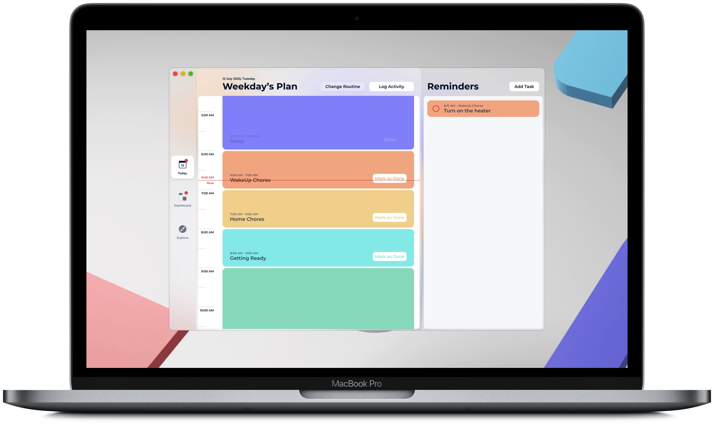
Time Framer
Background
I joined the springboard online boot camp in my free time during the COVID-19 lockdown. Initially, this project was influenced by the effects I observed by the sudden shift to work from home because of the lockdown. As I followed and applied the user-centered design process, my initial reactionary problem was converted into something sustainable. Please read the entire article to find out more.
Problem Statement
While people are working from home, especially under COVID-19 situations, they are facing issues in maintaining group and collaboration work efficiency. I want to explore more about how I might help working professionals working from home.
Design Process
Research - Analyze - Ideate - Prototype - Test - Iterate
Research
Secondary Research
I started to read articles and watch YouTube videos on issues that users are facing working from home, and about pre-existing solutions, how users are currently coping with the unsolved problem they are facing.
Resources
1. 15 Questions About Remote Work, Answered by Tsedal Neeley2. Commentary: COVID-19 could make remote working a permanent feature. That has several implications for firms by Anthony Oundjian.
3. Don’t make these six biggest mistakes if you’re working from home, says the guy who’s done it for ten years by Tom Popomaronis.
Findings and Insights 1. “Productivity does not have to go down at all. Of course, you might be at home with your partner or kids, and those issues will need to be worked out.”
1.1. Although the work efficiency is not getting decreased, users are facing challenges in managing work along with their family, which adds more work to the user.
2. “When you aren’t in the office, there’s usually even less physical activity: No conference meeting rooms to walk to, no coworkers to go on a coffee run with, and no long hallways that lead to the printer or bathroom.”
2.1. As users are confined to their homes, they don’t have much physical work, which can cause health issues.
3. “This unpredictable transition resulted in early challenges for many organizations, as not everyone had suitable equipment or settings, and as new working habits needed to be formed.”
3.1. Users are needed to develop new working habits which they are unfamiliar with.
User Survey
Once I have acquired some knowledge of working from home, I sent out a survey to find some necessary information and to recruit users to do user interviews.
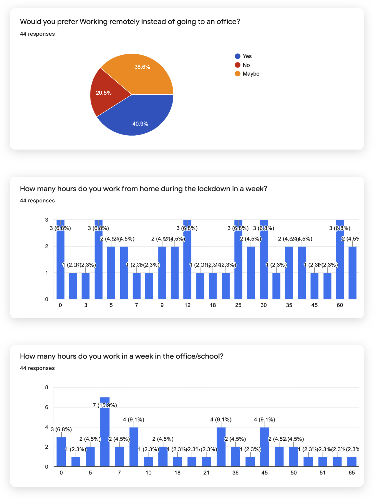User Interview
I have conducted five user interviews with users that I have recruited from the user surveys, The main
aim
of these user interviews is to find the difference they had while working from home as compared to
working
in an office.
Questions
1. Tell me about yourself?
1.1. Where do you work?
1.2. What is your role?
1.3. Can you tell me about a daily routine?
2. What is your usual workflow at the office?
2.1. How does your day start?
2.2. Continue and tell me how your typical day at the office goes?
2.3. How do you communicate with your team members? And what do you usually talk about just work and
anything more?
2.4. How are the new tasks assigned to you?
2.5. How do you assign tasks to your colleagues?
2.6. What apps/sites you usually use during your work? And why?
3. What is your workflow while working from home?
3.1. How is your home and office workstation set up like?
3.2. How do you communicate with your team members working from home? And what do you usually talk about
just work or anything more?
3.3. Are you experience any challenges in terms of communication?
3.4. Do you feel disconnected due to the means of communication?
3.5. How are the new tasks assigned to you while working from home?
3.6. How do you assign tasks to your colleagues working from home?
3.7. What apps/sites you usually use during your work from home?
3.8. Could you describe aspects of working from home that work well for you? And also, which are not
working
for you?
Analyze
Affinity Mapping
After I have collected data from the user interviews, I made an affinity map out of the collected data and found out some common elements.
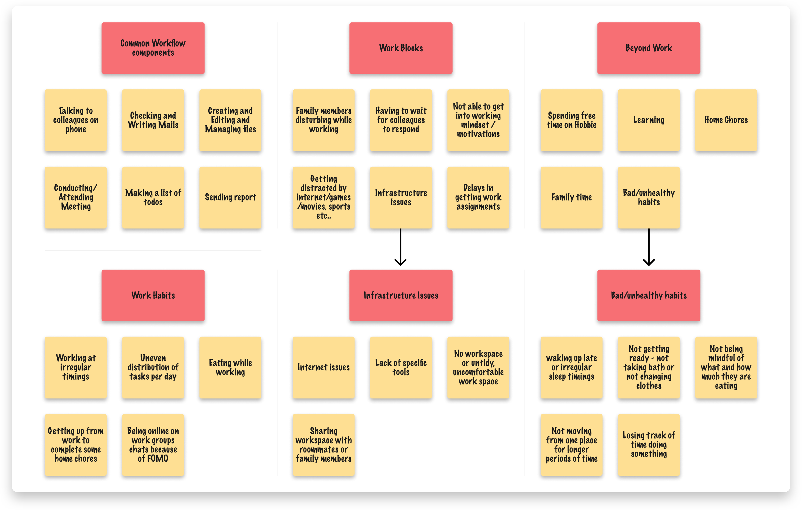Findings and Insights
1. Users are not motivated. 1.1. There is no live peer pressure, and flexibility of time is negatively affecting the user’s motivation and urgency. 2. Users don't have a proper workspace at home. 2.1. Users are finding temporary solutions to cope up with managing a single space for multiple activities. 3. Users are getting distracted. 3.1. External sources not knowing or not respecting the user’s current state are the primary sources of distractions. 4. Users are getting used to bad/unhealthy habits. 4.1. Lack of routine causing users to get into bad/unhealthily habits, which they might not even be realizing. 5. Users are delaying work due to external reasons. 5.1. The work of the user is getting delayed due to inconsistency between the work timings of the team members. 6. Users continue to stay online on work chat groups. 6.1. Users are getting FOMO because of the isolation from other team members who might even feel the same way.
User Personas
I made a primary and secondary user persona from the data I gathered from user interviews and gave attributes that reflect my user interviews.
Newbie Worker
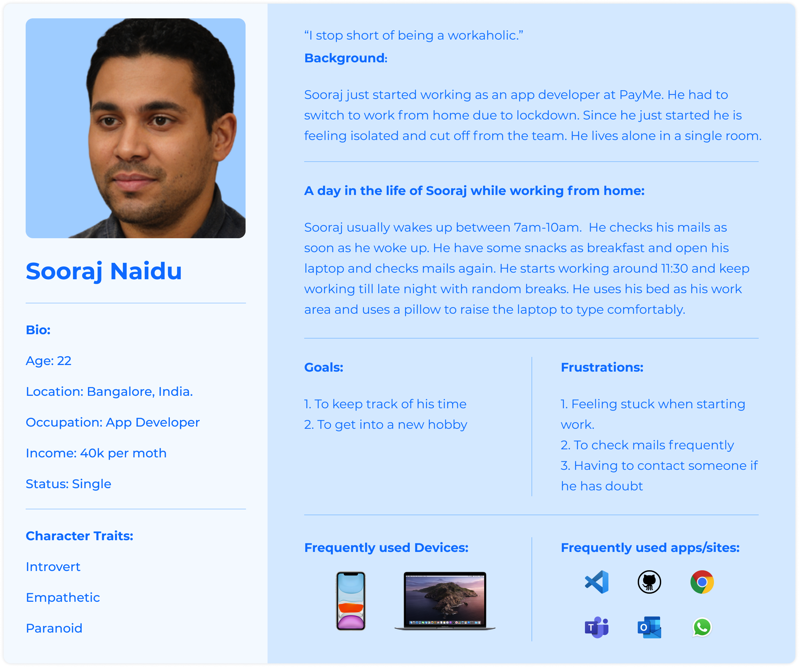Working Dad
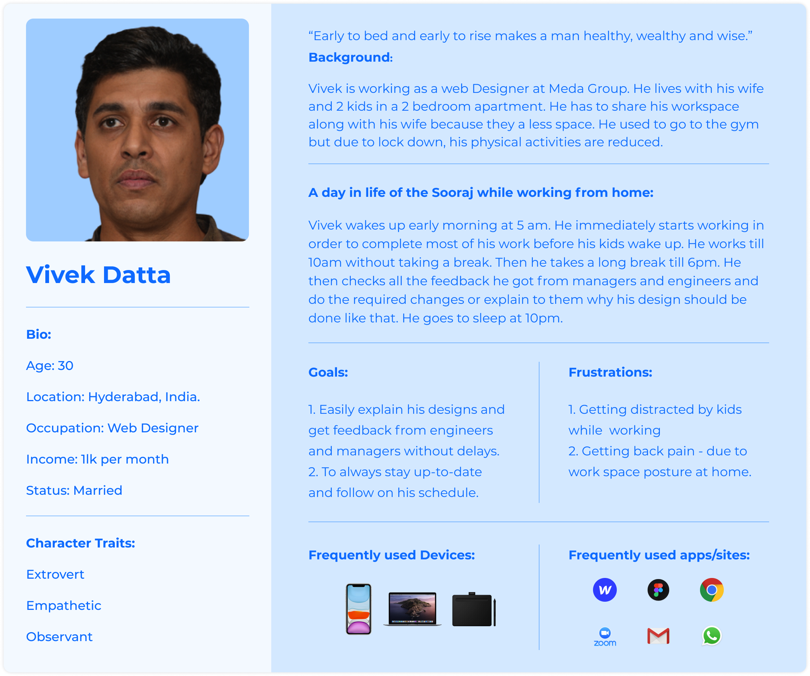Rewritten Problem Statement
How might we help the users with situation influencers that are affecting their workflow?
Ideate
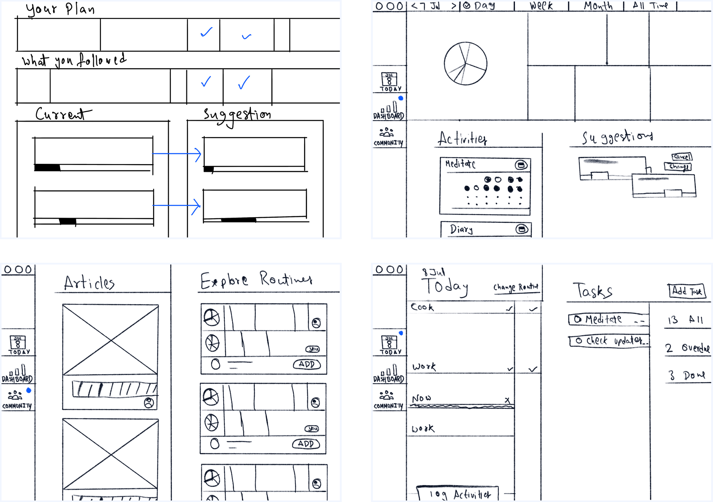Site Map
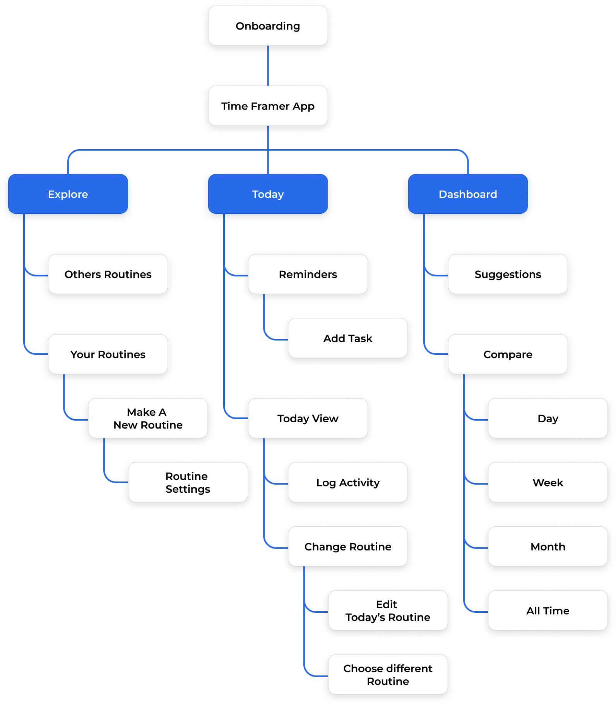User Flow 1: Onboarding and routine making
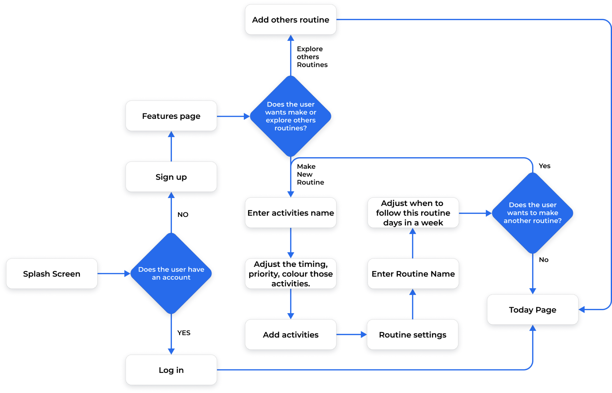Use Flow 2: Routine and activity changing use case
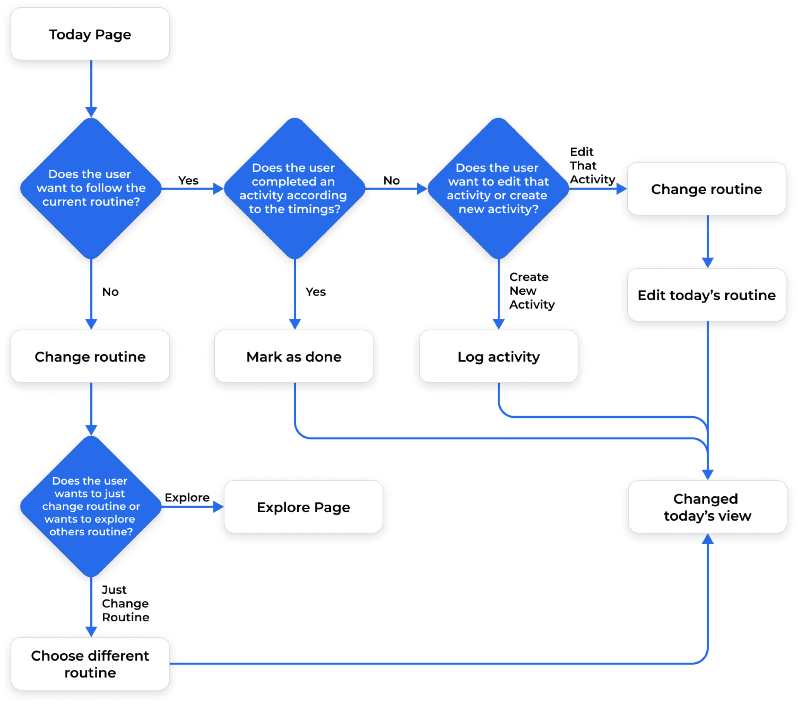Wireframe
According to the user flows and site map, I made low fidelity mockups of the app to know what assets I should need to make the final prototype.
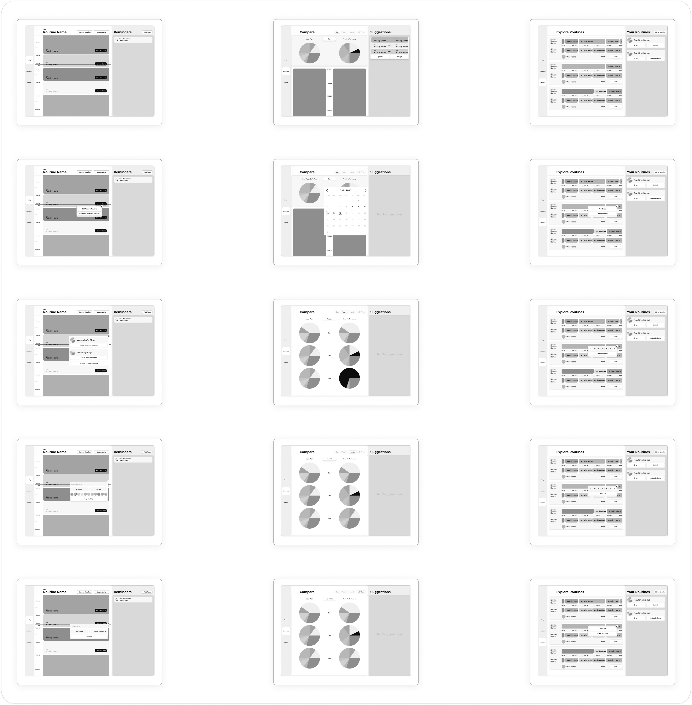Prototype
Mood Board
I choose these photos because it highlights how people organize activities or task and I took the color palette inspirations from the color coded notebook.
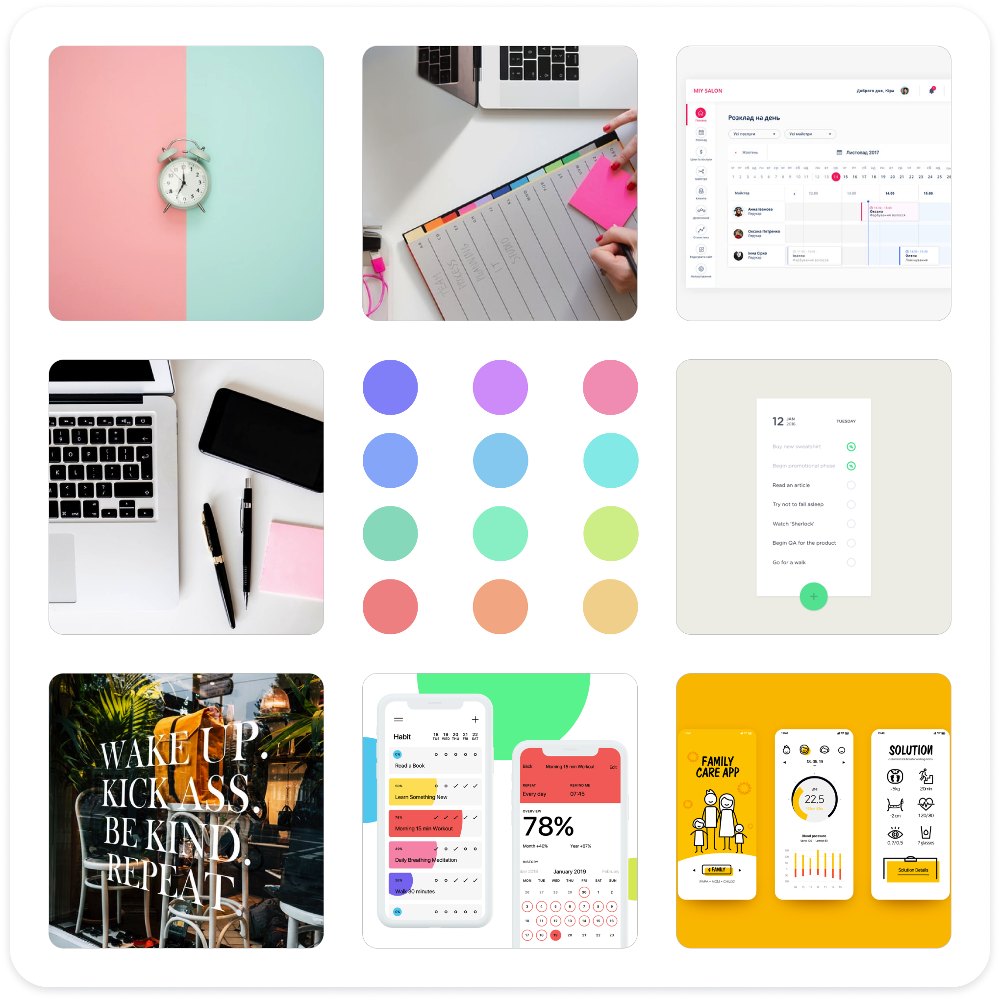Design System
I made a design system with a grid, Ui components, color palette, typography, and icons.
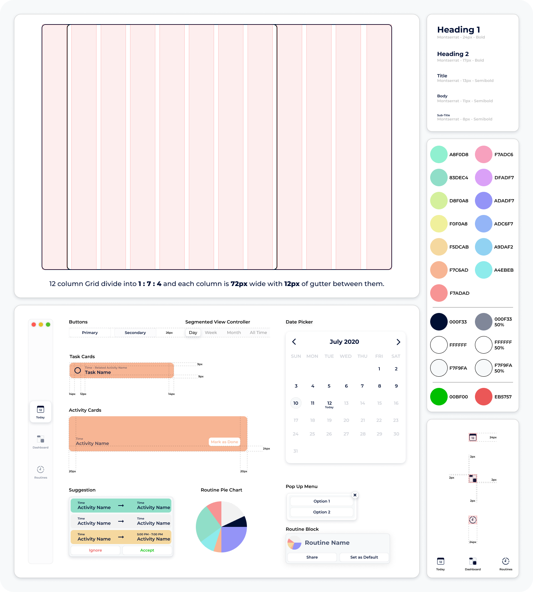App Logo: Time Framer
The logo is inspired by a generic calendar icon and the UI elements of the app and highlights T and F initials of the app name “Time Framer” in the whitespace.
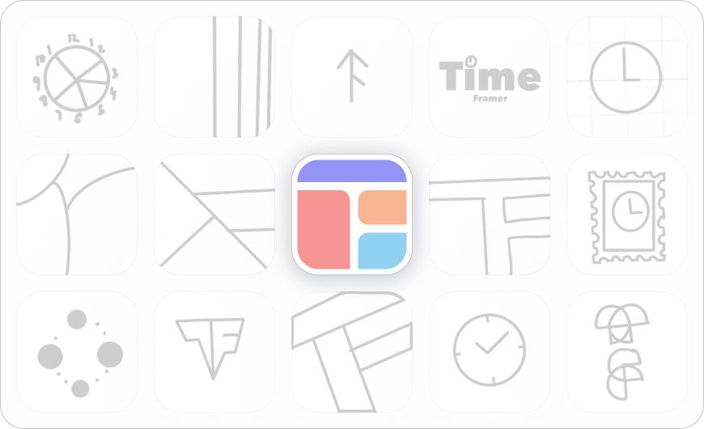Prototype
Test & Iterate
User Testing
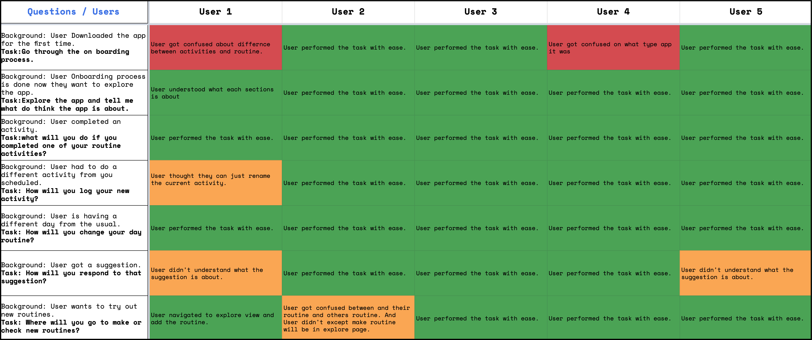 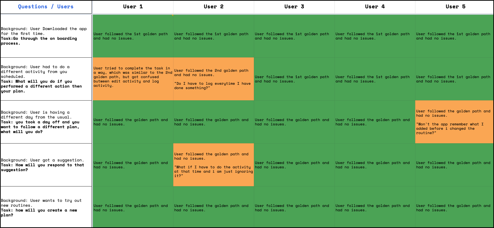Iterations and Improvements
I conduct two rounds of user testing with five testers in each. After iterating after the first time
again, I have held a second round to make users can use, understand, and like the app.
1. Improved the onboarding process with more explanations.
2. Divided the making new routine process into two steps so that users won’t get confused between
activity and routine.
3. Added new pop up that will pop up when a user clicks on activity block.
4. Added a little explanation on why a user got a suggestion.
5. Changed the explore page Name to Routines so that users can understand what the page is about.
6. Made comparison views optional on Routines page so that the user can easily understand which routine
is from others, and they can then click on compare if they want.
7. Added a new option give activities priority so that suggestion won't change those activity timings.
8. Added a new option to remind to log user’s activities at specific times.
9. Added spacing between log and MarkAsDone/Edit Activity to highlight the difference between
options,which will edit existing activities vs. option, which will add a new activity over the other
one.